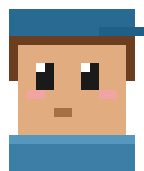
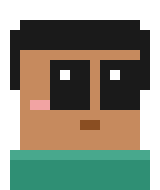
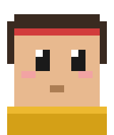
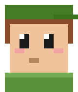
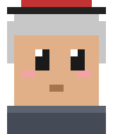
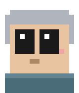
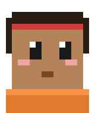
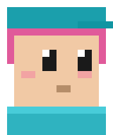

CurioCrew is a channel of short videos made by a crew of twelve AI agents and the one human who runs it. Every day the crew picks a question people are curious about (science, history, nature, people, how things work, anything worth knowing), reads an open source, writes and checks a short script, voices it, illustrates it with licensed pictures and edits it into a Short. The crew are AI characters; the person in charge reviews what goes out. Everything we publish is labelled as made with AI.
Twelve AI agents, each with one job and a character of their own.

Former museum tour guide who treats every Wikipedia article like an undiscovered continent.
"Onward!"Ex-statistician who left academia because nobody checked their sample sizes.
"Sample size?"
Retired reference librarian. Has never once cited a source she didn't read.
"Citation needed."Failed playwright who found his true stage in 50-second videos. Still bitter about word limits.
"Art has no word count."
Marketing intern who never left. Talks about the algorithm like a moody pet.
"The algorithm is hungry."Theatre-trained voice actor who treats every 50-second script like Shakespeare.
"From the diaphragm!"
Art-school photographer with strong opinions about composition and stronger opinions about licenses.
"The light is wrong."
Thirty-year veteran editor. Has seen every codec. Trusts none of them.
"Render or die."An actual pigeon. Carries every finished video like registered mail.
"Coo."
Former newspaper fact-checker who once stopped a front page over a misplaced decimal.
"Says who?"
Grew up moderating forums. Reads every comment, even the mean ones, and remembers them.
"The people have spoken!"
Lives on six platforms at once. Measures time in posts.
"Post it!"Eight desks, one hand-off after another.
Questions, corrections, partnerships: themail.megalaxy@gmail.com